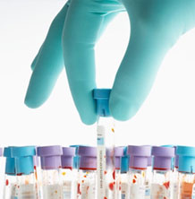

Welcome to SMART TREATMENT

The SMART TREATMENT is a system which bring patient, doctor and laboratories together.
Using the SMART TREATMENT system patient can register to the system and give needed specialist and location input to the system.
-
hematology
Blood extraction using seismic energy for painless testing.
read more -
urine & drug testing
Accurate and secure testing of urine for diseases and drugs and medicines.
read more
-
x-ray
Fast and clear x-ray results. You’ll be assisted by our friendly staff all the way.
read more
-
pathology and dna
State of the art testing for DNA that’s sure to be have fast and accurate results.
read more